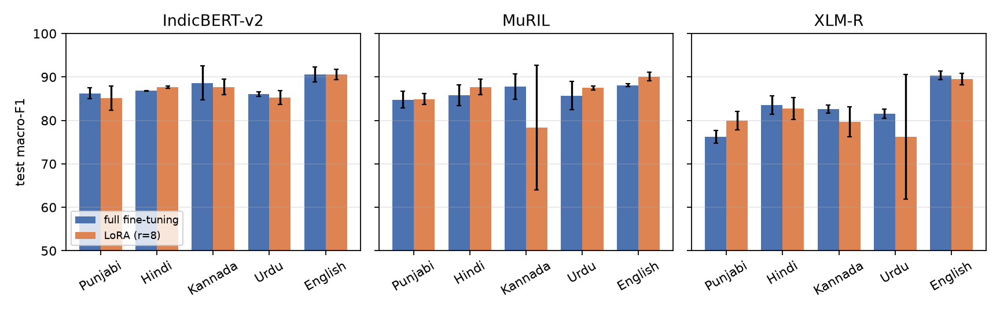
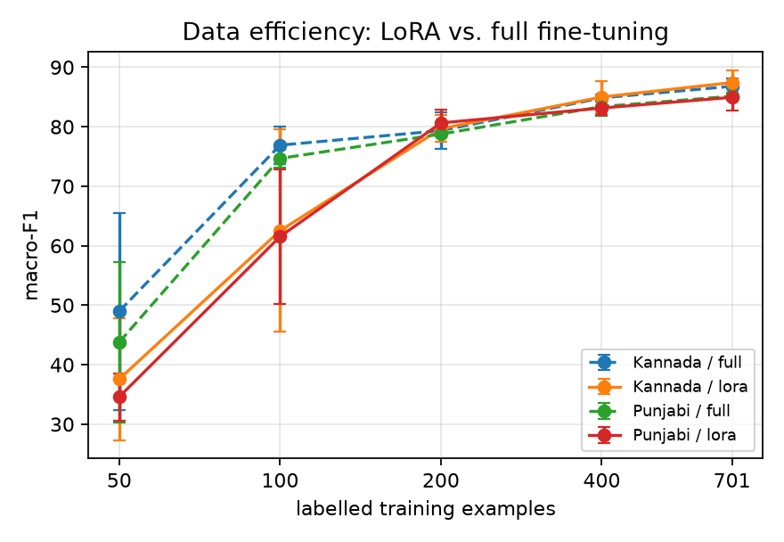
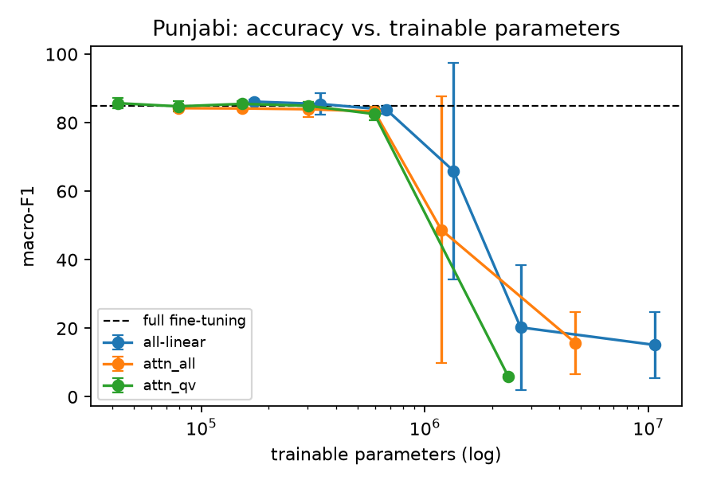
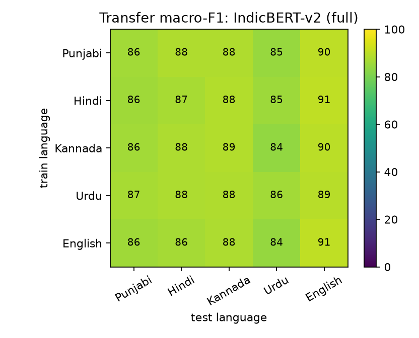

Most Indian languages have only a few hundred labelled examples for a given task. Full fine-tuning of a 237M-parameter encoder is expensive at that scale and can overfit, while LoRA [2] trains a small low-rank update and leaves the backbone frozen. Evidence that LoRA is "almost as good" comes mostly from English and high-resource benchmarks. We ask three questions:
Because SIB-200 [1] contains the same sentences in every language, differences between languages in our results come from language and script, not from different data.
Data. SIB-200 topic classification (7 classes; 701 / 99 / 204 train / dev / test sentences per language) for Punjabi (Gurmukhi), Hindi (Devanagari), Kannada (Kannada script) and Urdu (Perso-Arabic); English is used as an additional transfer source.
Models and methods. MuRIL-base [4], IndicBERT-v2 [5] and XLM-R-base [6], each trained with full fine-tuning or LoRA (r = 8 on the query and value projections, α = 16). Every run is evaluated on the test sets of all five languages, which gives the cross-lingual transfer matrix at no extra cost.
Classification head. Mean-pooled token states → dropout → linear layer. We do not use the checkpoint's [CLS] pooler (Section 4).
Protocol. 10 epochs, best epoch chosen on dev macro-F1, batch size 16, max length 128, 10% warm-up, fp16. Learning rates were selected on the Punjabi dev set only (MuRIL, seed 0): LoRA from {5e-4, 1e-3, 2e-3, 3e-3} → 2e-3 (dev 0.835), full from {2e-5, 3e-5, 5e-5, 1e-4} → 5e-5 (dev 0.863). The default 5e-4 for LoRA reached only 0.713 on dev, so without this step LoRA would have looked 14 points worse than it is. Each configuration is run with 3 seeds; LoRA − full differences are tested with a paired bootstrap over test sentences (2,000 resamples, seeds pooled). All runs used one NVIDIA GTX 1660 Ti (6 GB).
| Model | Method | Punjabi | Hindi | Kannada | Urdu | Avg* | Trainable % | Peak mem (GB) |
|---|---|---|---|---|---|---|---|---|
| IndicBERT-v2 | full | 86.2 ± 1.3 | 86.8 ± 0.1 | 88.6 ± 3.9 | 86.1 ± 0.5 | 87.7 ± 0.7 | 100 | 4.50 |
| IndicBERT-v2 | LoRA | 85.1 ± 2.8 | 87.7 ± 0.3 | 87.7 ± 1.8 | 85.3 ± 1.6 | 87.3 ± 0.6 | 0.11 | 2.25 |
| MuRIL | full | 84.8 ± 1.9 | 85.8 ± 2.4 | 87.8 ± 2.9 | 85.7 ± 3.3 | 86.4 ± 0.4 | 100 | 3.91 |
| MuRIL | LoRA | 84.9 ± 1.2 | 87.7 ± 1.7 | 78.4 ± 14.3 | 87.5 ± 0.5 | 85.7 ± 2.7 | 0.13 | 1.92 |
| XLM-R | full | 76.2 ± 1.4 | 83.6 ± 2.1 | 82.6 ± 1.0 | 81.6 ± 1.1 | 82.9 ± 1.0 | 100 | 4.67 |
| XLM-R | LoRA | 80.0 ± 2.1 | 82.7 ± 2.5 | 79.7 ± 3.4 | 76.2 ± 14.3 | 81.6 ± 2.6 | 0.11 | 2.19 |
For the best encoder, IndicBERT-v2, LoRA is 0.5 points below full fine-tuning averaged over the four Indic languages. Per-language differences range from −1.1 to +0.8 points, and none is significant (all p ≥ 0.37). LoRA halves peak GPU memory (2.25 vs. 4.51 GB). Indic-specific encoders beat XLM-R on average by 3.5–4.8 points with full fine-tuning and 4.1–5.7 points with LoRA.
Two cells show a significant LoRA deficit: MuRIL on Kannada (−9.5, p = 0.001) and XLM-R on Urdu (−5.4, p = 0.001). In both, the ±14.3 standard deviation comes from a single seed that trained poorly, not from a consistent gap. The learning rate tuned on MuRIL/Punjabi therefore does not transfer safely to every model–language–seed combination; full fine-tuning showed no such failures.



LoRA does not help when data is scarce. With 50 examples LoRA is 10.3 points below full fine-tuning (average of Punjabi and Kannada), and it is still well below at 100. From 200 examples the two are within noise, with LoRA slightly ahead at 200 (Punjabi 80.6 vs. 78.8; Kannada 79.7 vs. 79.3). This contradicts the common expectation that PEFT is the safer choice in the very-low-data regime, at least with a single fixed learning rate.
Rank. Up to rank 8, macro-F1 is flat within noise for all target sets (e.g. query/value: 85.7 at r = 1, 84.9 at r = 8); rank 1 on all linear layers (0.07% of parameters) is as good as anything we tried. From rank 16, many runs diverged to chance level (query/value at r = 64: 5.9). Because α = 2r keeps the LoRA scale constant while the update grows with rank, a learning rate tuned at r = 8 is too large at high rank. This is a learning-rate × rank interaction, not evidence about adapter capacity; a per-rank learning-rate search is needed to isolate the effect of rank.

Transfer is nearly flat. A model trained only on Hindi reaches 85.8 on Punjabi, the same as one trained only on English (85.8) and close to training on Punjabi itself (86.2). We expected a related Indic source language to beat English; it did not (difference 0.05 points).
Hindi and Urdu are close to one spoken language written in two scripts. Training on Hindi and testing on Urdu gives 85.3 against 86.8 on Hindi, so the script change alone costs 1.5 points: real but small for a shared multilingual encoder.
Error analysis. For MuRIL trained on Hindi, entertainment is the weakest class in every test language (F1 75 / 65 / 70 for Hindi / Punjabi / Urdu). Transfer errors (94 for Punjabi and 91 for Urdu, pooled over 3 seeds) are mostly confusions among entertainment, travel and science/technology.
Our first implementation used the standard Hugging Face sequence-classification head, which reads the checkpoint's [CLS] pooler. MuRIL+LoRA then predicted a single class for every input (macro-F1 0.057, the majority-class score), in fp16 and fp32 alike, although the loss decreased. Diagnosis showed that MuRIL's pooler output is almost identical for all sentences (mean pairwise cosine 0.999; per-dimension std ≈ 3·10-4), so a freshly initialised head can only learn the class prior. The information is present but badly scaled: a frozen-encoder linear probe reaches 0.74 macro-F1 on standardised pooler features and 0.78 on mean-pooled token states. Switching to mean pooling fixed training for all models. The general lesson is to check that features vary across inputs before blaming precision or optimisation.